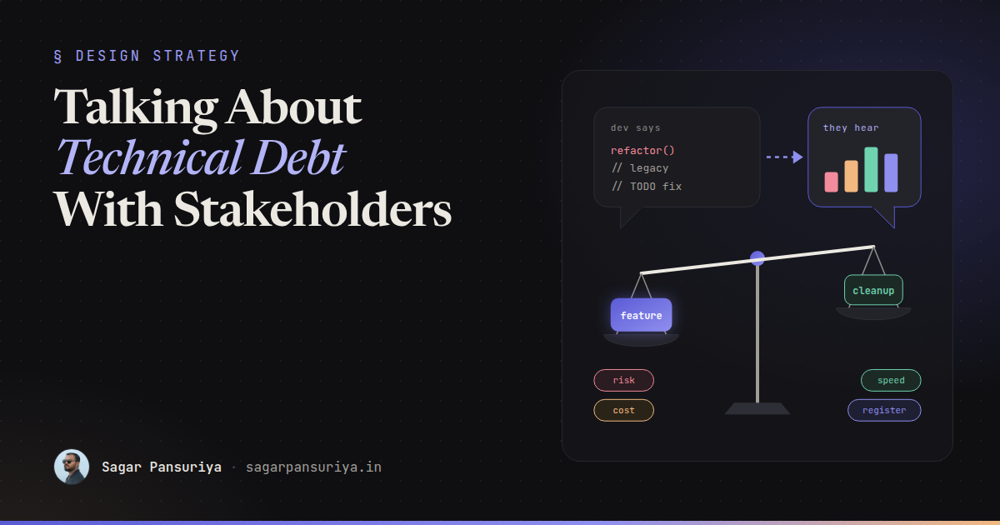
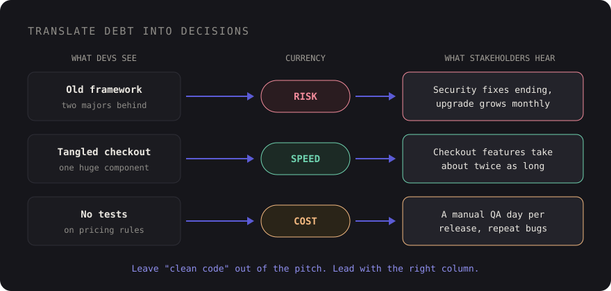

Talking About Technical Debt With Non-Technical Stakeholders


Picture a planning meeting. The product owner has a roadmap full of features, the client has a launch date, and a developer says, "We really need a sprint to pay down technical debt." There's a pause. Someone asks what that would deliver. The honest answer is "nothing you'll see", and the sprint quietly disappears from the plan.
Six months later the same team is taking three weeks to ship things that used to take one, every release breaks something unrelated, and the stakeholders are asking why the developers have slowed down.
The debt was real both times. What failed was the conversation. In most teams I've led, the problem isn't that stakeholders don't care about code quality. It's that we describe it in a language they can't act on. This post is about changing that: framing debt in terms of risk, cost and speed, making it visible, putting rough numbers on it, and choosing a way to pay it down that survives a busy roadmap.
Stop saying "technical debt"
The phrase itself is part of the problem. To developers it's a precise metaphor. To a non-technical stakeholder it often sounds like "the developers want to redo work they already did", or worse, "the developers made a mess and want time to clean it up".
Stakeholders make decisions in three currencies: risk (what could go wrong), cost (money and people's time) and speed (how fast we can deliver what's next). Every piece of debt worth fixing affects at least one of those. Your job is to translate.

A few translations that tend to land:
- Outdated dependencies become risk: "We're two major versions behind on the framework. Security fixes for our version end soon, and each month we wait makes the upgrade bigger."
- A tangled module becomes speed: "Any change to checkout currently takes about twice as long as similar work elsewhere, because it's all one file with no tests."
- No automated tests becomes cost: "Every release needs a day of manual testing, and we still ship regressions. Most of the bugs you saw last quarter came from that area."
- Copy-pasted components become speed and consistency: "The button exists in eleven slightly different versions. The rebrand you want next quarter means changing all of them by hand."
Notice none of these mention code quality, clean architecture or best practices. Those are reasons developers care. They are rarely reasons a budget holder says yes.
Make it visible with a debt register
Debt that lives in developers' heads gets raised as a vague complaint in a meeting. Debt that lives in a shared list gets prioritised like everything else. A debt register is just that: a simple table, visible to stakeholders, with one row per known problem.
| Item | Impact | Currency | Effort | Trigger |
|---|---|---|---|---|
| Framework two majors behind | Security fixes ending; upgrade grows monthly | Risk | 2 weeks | Before end of support |
| Checkout is one 2,000-line component | Checkout changes take ~2× longer | Speed | 1 week | Next checkout feature |
| No tests on pricing rules | Manual QA day per release; repeat bugs | Cost | 4 days | Now |
| 11 button variants | Rebrand touches every page by hand | Speed | 3 days | Before rebrand |
Two columns do most of the work. Impact is written in stakeholder language, not developer language. Trigger says when it becomes worth fixing, which turns an open-ended plea into a scheduled decision. Some debt is fine to live with forever; the register makes that an explicit choice rather than an accident.
Keep it wherever your stakeholders already look: a page in your project tool, a tab in the planning spreadsheet, a label in the issue tracker. A register in a markdown file only developers open doesn't count. If you're joining a codebase fresh, the first-week frontend architecture audit is a good way to seed the first version.
Put rough numbers on it
You don't need precise figures. You need figures good enough to compare against a feature. The simplest model is the one the metaphor already gives you: interest and principal.
- Interest is the ongoing cost of not fixing it: extra hours per feature, manual QA time, bug-fixing time, incidents.
- Principal is the one-off cost of fixing it.
An illustrative example: if the tangled checkout adds roughly three extra days to each checkout-related feature, and the roadmap has four of those planned this year, the interest is about twelve developer days a year. If the refactor takes five days, it pays for itself before the second feature ships. That's a sentence a product owner can weigh against anything else on the list.
Be honest about uncertainty. "Roughly two to four extra days per feature, based on the last three we shipped" is more credible than a suspiciously exact number. Stakeholders trust ranges from people who explain where they came from.
Where you can, point to things they've already felt: the release that slipped, the bug a customer reported twice, the estimate that doubled. Past pain is more persuasive than predicted pain.
Choosing how to pay it down
Once debt is visible and roughly sized, you need a repayment plan that doesn't depend on winning an argument every sprint. There are three common approaches, and they work best combined.
The 20% rule
Reserve a fixed share of each sprint, often somewhere around 15 to 20 percent, for maintenance and debt. It's predictable, it keeps small problems small, and after the first agreement it doesn't need renegotiating. The risk is that it quietly erodes when deadlines loom, so make it visible in the sprint plan as real tickets, not a vague "slack" allowance.
Dedicated debt sprints
A whole sprint for a big item, like a framework upgrade. Sometimes unavoidable, but they're the hardest to sell because the stakeholder sees a sprint with no features. If you need one, schedule it against a trigger from the register ("before end of support in March") so it has a deadline and a reason, not just a wish.
Tie refactors to features
This is the approach I lean on most. When a feature touches an area with debt, include the cleanup in the feature's estimate and explain it once: "The discount feature is five days. Two of those are untangling the pricing module, which also makes the next pricing change faster." The stakeholder gets the feature, the codebase gets better where it's actually changing, and nobody has to approve an abstract refactor.
The caveat is honesty. Don't quietly pad estimates. Say what the extra time is for. Hidden refactoring erodes trust the moment someone notices, and it teaches the organisation that estimates are negotiable.
| Approach | Best for | Watch out for |
|---|---|---|
| 20% rule | Steady small debt, dependency updates | Erodes under deadline pressure |
| Dedicated sprint | Big, time-bound items like upgrades | Hard to sell, easy to postpone |
| Tied to features | Debt in areas the roadmap touches | Must be stated, never hidden |
Phrases that work, and phrases that don't
A lot of this comes down to word choice. Some phrases invite a "not now". Others invite a decision.
| Instead of | Try |
|---|---|
| "The code is a mess." | "Changes in this area take about twice as long and break more often." |
| "We need to refactor." | "If we spend three days here, the next four features in this area get faster." |
| "It's not best practice." | "This is where most of last quarter's bugs came from." |
| "We have to upgrade." | "Security fixes for our version stop soon. After that, every vulnerability is ours to patch." |
| "We need a tech debt sprint." | "Here are the three items on the register that block the Q2 goals, and what each costs." |
| "Trust me, it matters." | "Here's what it cost us the last three times." |
Also give them a real choice. "We can ship the feature in six days as is, or eight days with the cleanup, which saves time on the next two" respects that the decision is theirs. Sometimes they'll pick the fast option for a good business reason, like a trade show deadline. That's fine, as long as the choice is recorded on the register and the trigger for revisiting it is clear.
Keep the conversation going
A single persuasive meeting doesn't fix the pattern. What does is a steady rhythm:
- Review the debt register briefly in each planning session, the same way you review bugs.
- When debt causes a slip or an incident, note it on the register row. That's your evidence next time.
- When a paydown makes something faster, say so: "The pricing cleanup is why this took three days instead of six." Stakeholders need to see the return, not just the invoice.
- Remove items that no longer matter. A register full of stale complaints loses credibility fast.
The short version
- Translate every debt item into risk, cost or speed. Leave "clean code" out of the pitch.
- Keep a visible debt register with impact in business language and a trigger for each item.
- Estimate interest and principal as honest ranges, backed by things that already happened.
- Combine a small standing allowance with refactors tied to features, and save dedicated sprints for big, deadline-driven work.
- Offer choices, record the decisions, and show the payoff when cleanup speeds things up.
Stakeholders aren't against paying down debt. They're against paying for things they can't see or weigh. Make it visible and weighable, and most of them will make sensible calls, sometimes better ones than we would.
Discussion